Initial Project Backlog
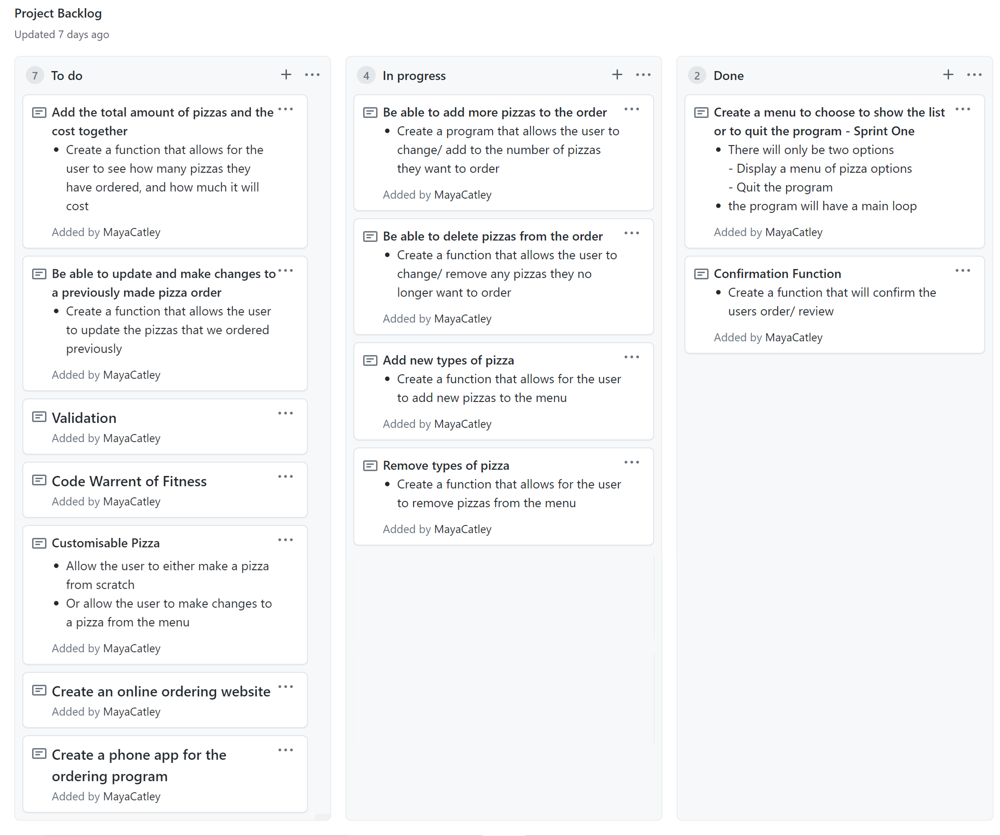Sprint One
The aim of this sprint is to create a menu that allows the user to view the pizza list, order a pizza and allows the user to quit the program.
Rough Program Plan
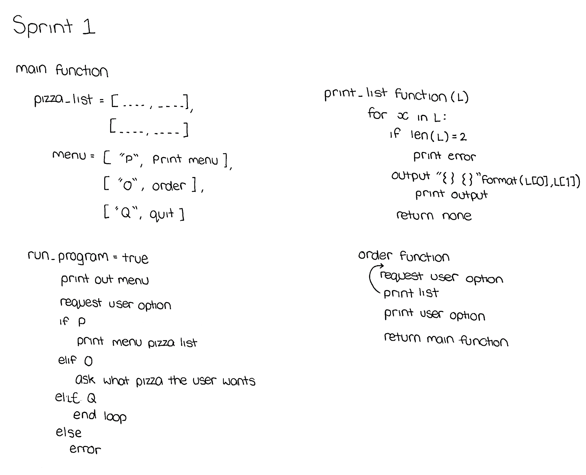Sprint One Board in progress
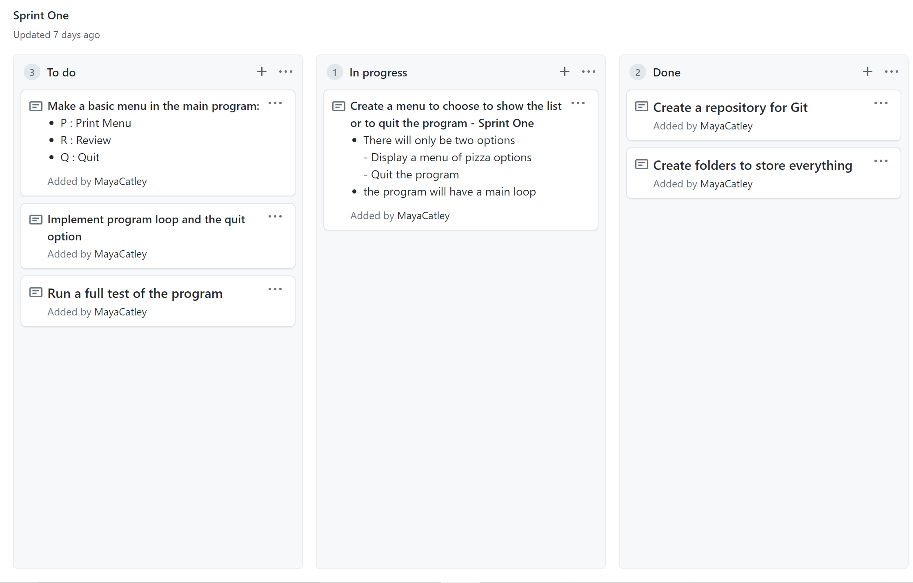Basic Test of Program
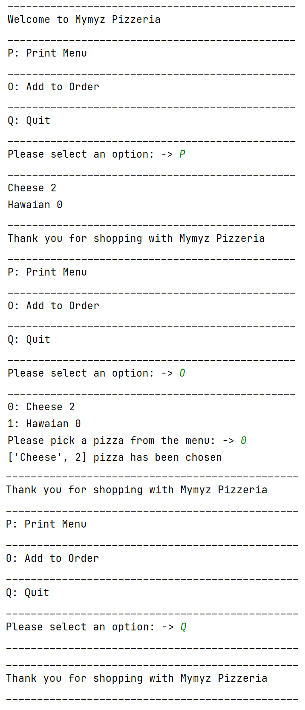Pushing to Git

Reflection
For Sprint 1 I made a program that allowed the user to view a pizza menu and then order a pizza. Sprint 1 has worked well, as it completes the important and necessary features my first version requires. In my next sprint (Sprint 2) I would like to have a way for the user to be able to take pizzas away from their order, I would also like to have a delivery and pickup option. The look of the program is easy to understand, due to the line formatting. In later versions I will need to validate the users answers, as so far the program just producers an error message, instead of this the program should helpfully inform the user that they have entered an invalid entry, and ask them to try and answer the question again. Later on in the program I will also need to add cost values to the different pizzas, as well as adding more pizzas to the menu so the user has more to choose from. It could be an interesting idea to add different options that the user can pick that would then add more money to their total, such as choosing extra cheese, or maybe a different type of pizza base.
Sprint Two
The aim of Sprint Two is to give the user the option to get their order delivered or the option for the user to pick it up themself to start the program. Sprint Two also allows the user add multiple pizzas at a time remove pizzas they no longer want.
Rough Program Plan
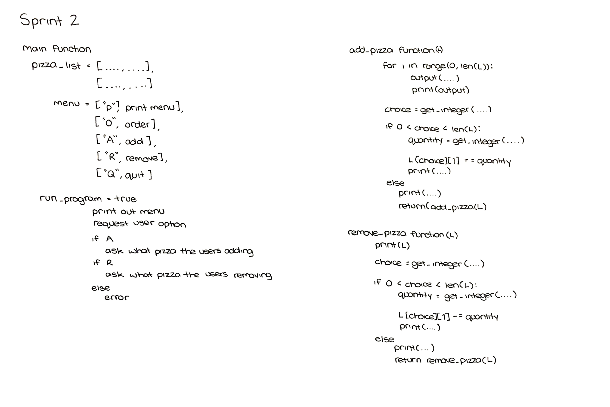Sprint Two Board in progress
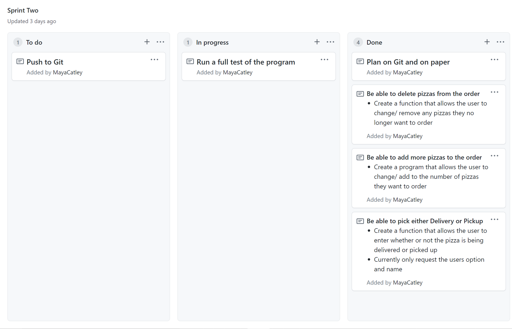Basic Test of Program
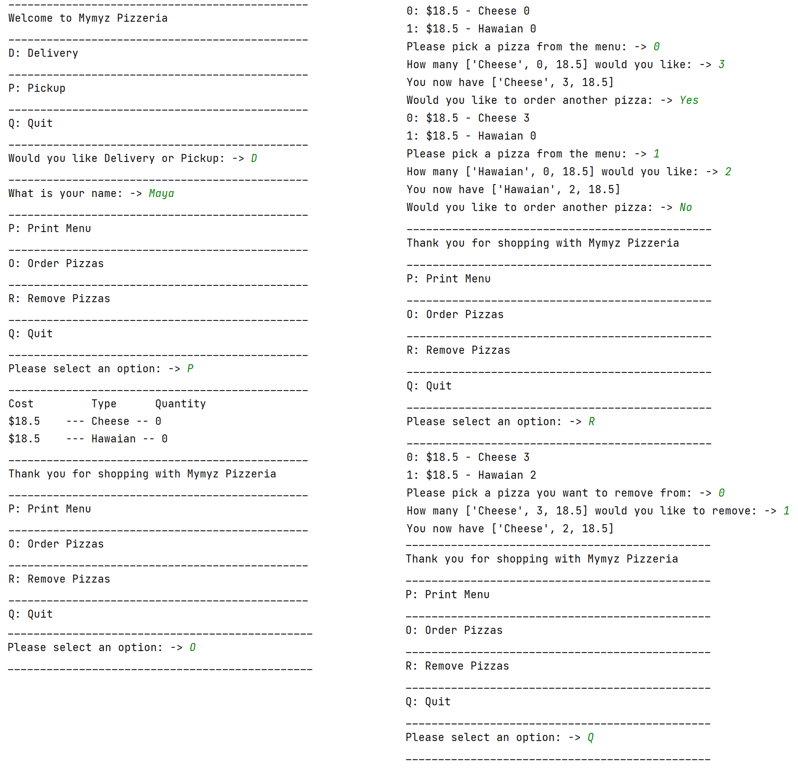Pushing to Git

Reflection
Sprint 2 has been effective in terms of picking either delivery or pick-up and then also having the option to order more pizzas and remove pizzas, for my future sprints I will need to validate these new features, as well as fixing my error messages. For Sprint Three I would also like to find a way to add costs to the users total order, have an option for the users current order to be printed, change whether or not the user wants to get their pizza delivered or if they want to collect it, and have the option to confirm their order.
I came across a few problems whilst working on this Sprint, such as finding a way for the delivery and pickup option to then take the user to the pizza option list. It would continue to ask the user whether or not they wanted delivery or pickup, so I had to find a way to redirect the user to the right place and made sure the program stayed there. I also struggled with the print order function, as it wouldn't update after the user had added or removed a pizza from their order, this was because the pizza list that was printed out when the user selected the print order function was inside the loop, this meant that everytime the option list was printed out, the pizza list/ print order option would reset. And therefore would never print out the correct values. To fix this problem, I took the pizza list outside of the loop which was an easy fix.
Sprint Three
This aim of Sprint Three I would also like to find a way to add costs to the users total order, have an option for the users receipt/ current order status to be printed, change whether or not the user wants to get their pizza delivered or if they want to collect it, and have the option to confirm their order. I would also like to fix the formatting of the program, and have it print out much more like an actual receipt would.
Rough Program Plan
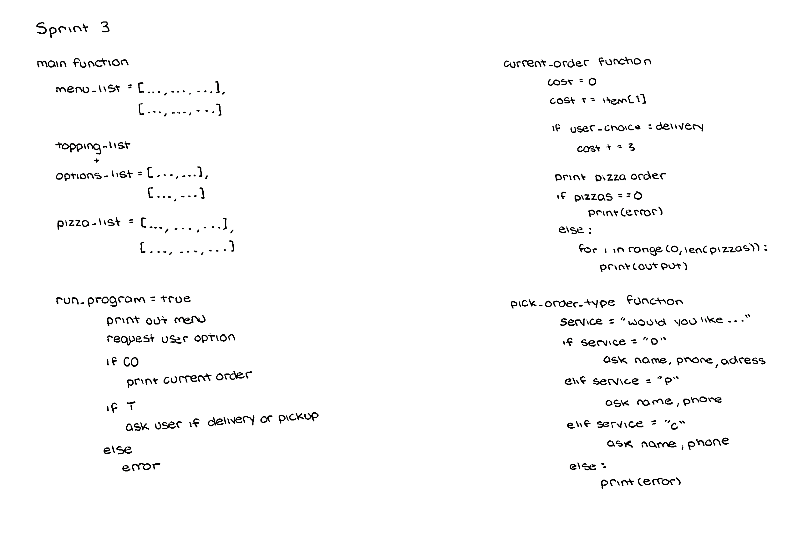Sprint Three Board in progress
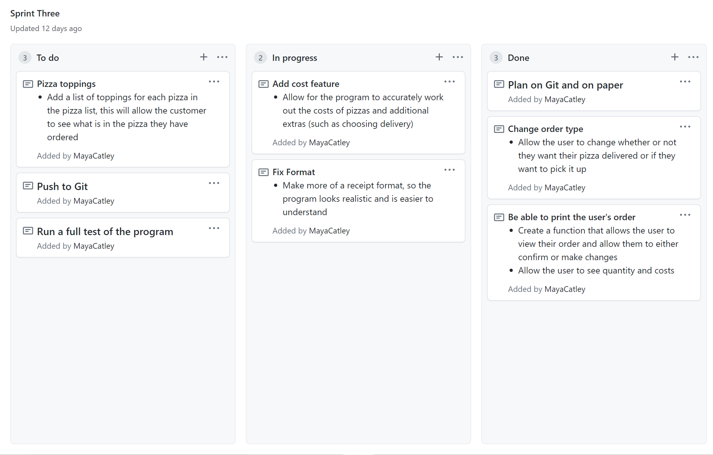Basic Test of Program

Pushing to Git
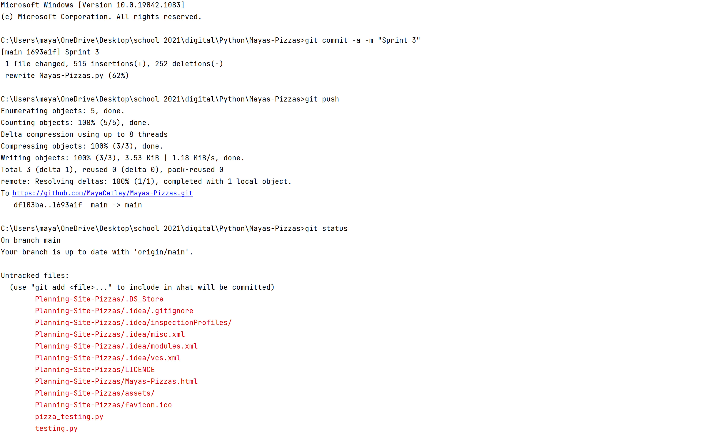Reflection
Sprint Three works very well and I am very pleased with how the program is running, and while it took me quite a while, I am very glad I spent as much time as I did trying to make the program print out like a receipt, as I think it makes the program much cleaner and easier to use. I am also happy with the accuracy of the costs, as I have tested multiple times, and the cost is always correct. I think it worked well that I added the toppings for each pizza, as now the user can see what they are ordering, this will also make it easy for me to customise the pizzas in Sprint Four.
Many problems arose whilst making this sprint such as not having a checkout option, this means the user has to select quit for the program to stop, in the next sprint this is definitely something I would have to fix as it is a crucial option for ordering a pizza. I also need to validate the users answers, although I will probably do this after adding the customise option. I also think it could be a good idea for the user to view previous orders, so they could see the customer history.
Another problem that I found was actually implemented in Sprint Two, which was allowing the user to add multiple pizzas in one go, I decided to remove this from my code as it created problems when adding totals costs together, and would have made the print_current_order function much more complicated.
I also struggled to get the order summery function to work, this is because when the order was printed out, the whole pizza list would print out regardless of what had been ordered, with amount would be next to them. This meant that pizzas were displayed even if the quantity of the pizza was 0. I fixed this by making it so pizza[0] is the name of the ordered pizza, pizza[1] is the current price, pizza[2] is the toppings, and pizza[3] is the options. This meant that rather than the whole list being printed, each pizza was printed separately and in components.
Sprint Four
The aim of Sprint Four was to finish the printed program, so that all Sprint Five had to do was be validated. This means that Sprint Four should include the customisable pizza option and the resulting cost, view previous orders, allow the user to pick delivery/pickup later on, and confirm the order.
Rough Program Plan
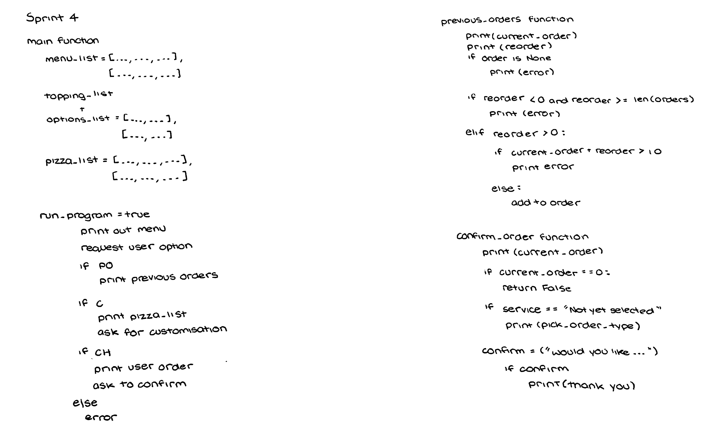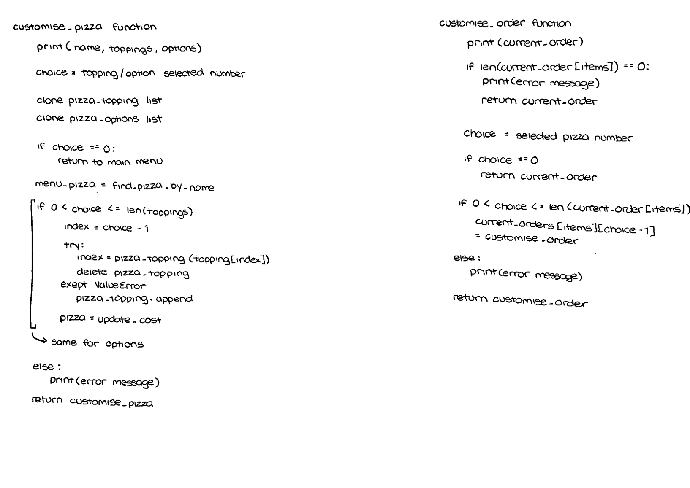
Sprint Four Board in progress
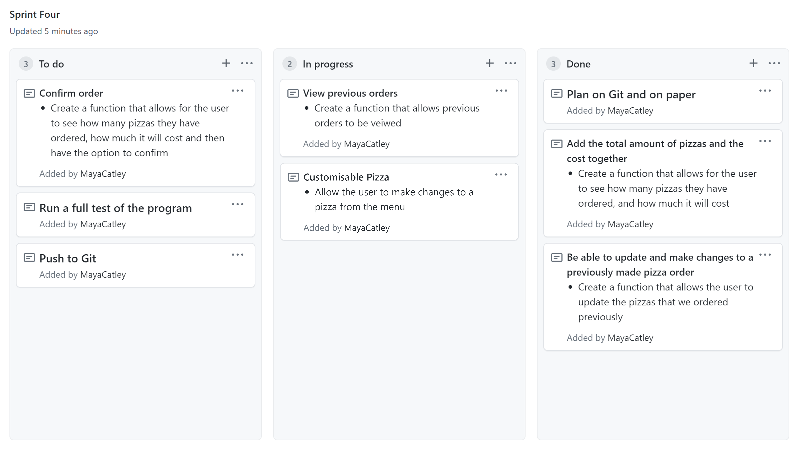Basic Test of Program

Pushing to Git
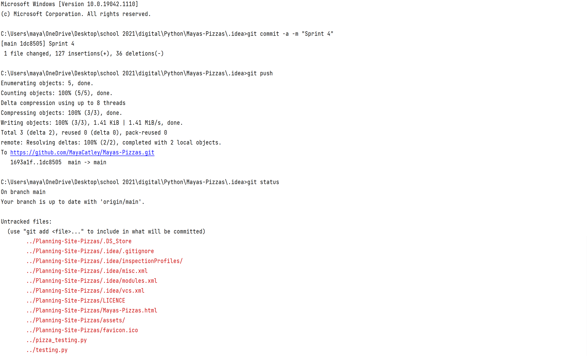Sprint Review
Sprint Four works very well and is essentially finished aside from validation. The new customisable pizza function works well, and the previous order option works great. The printed our program needs a little bit of refining in terms of spacing, but on the whole looks effective.
I also added a "enter 0 to quit" option, I originally had the user always selecting "Q" to quit, but I didn't like the way a minor quit (just exiting back to the main menu) had the same command as a more major quit (exiting the program from the main menu). I think this also make the program easier to use as it became predictable that if the user ever wanted to return they selected "0", and if they wanted to fully quit they could choose "Q".
There are many things I would liked fixed in the final sprint, such as the description after the user selects either delivery or pickup ...
'date': '2021-07-21', 'name': 'Maya', 'type': 'Delivery', 'items': [], 'phone': '0237468564', 'address': '31 Khandallah Road'
Another problem I encountered was to do with the receipt formatting, if the user didn't choose delivery or pickup and instead picked “Choose Later”, the program would crash when trying to order a pizza as there was no phone number. This was a problem because I made it so orders were categorised by the users phone number, and because it left a blank spot on the receipt. I fixed this by making it display "Not yet selected" as the service type, this also ties into the Usability Relevant Implication, as it keeps the user updated, and remind them that they will need to select an option later on.
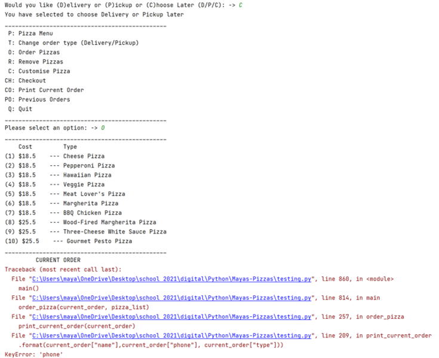Another problem was with the custom pizza function and the users additions not saving. The problem occurred because menu_pizza / previous orders were being changed when customising the toppings/options so the new list is cloned this means the users changes are updated each time and will be modified everywhere. I solved this by cloning the new toppings and options.
I also noticed that the previous orders function wasn't allowing the user to add their previous order to their current order, this error came up because I forgot to add p[3] which meant the toppings weren't there, and the pizza couldn't be found.
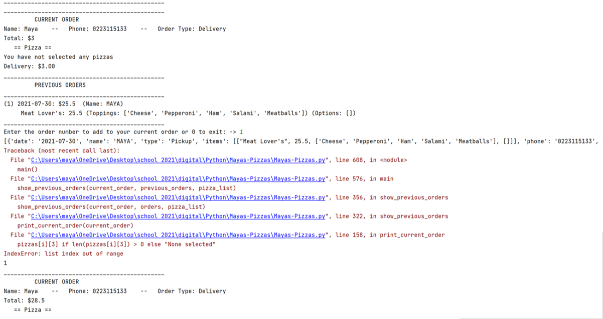A decision I had to make while coding the custom pizza function was deciding to use checkboxes, originally I had the user selecting a printed out index number, this meant when it was printed the name of the topping/ option would be next to an index number which made it look like a quantity. So I researched and found that checkboxes would be a good solution. I made the checkboxes by first adding 1 to the index so it starts from 1 and not 0 (as my quit option is 0), I then had the program to check if x[0] contained “X”, if it did it was replaced with nothing, and if it didn’t an “X” was added. This was a great addition to ensuring the Usability relevant implication was being considered, as it easily allows the user to see what options and toppings are selected so they always know whats going on.
I would also like to change the message the program finishes on, as currently the program ends on "Thank you, please select from the following options menu", as the program has ended and therefore no other options menu with be printed. I will need to do a lot of validating in Sprint Five for things like the customers name, and making sure its less than 50 characters long, also making sure the phone number is 8 digits, finding a way to validate the delivery location, and making sure that there is a helpful error message for every possible mistake the user could make.
Sprint Five
This aim of Sprint Five is to fix a few formatting and error messages, and to validate as much of the program as I can, to ensure that it is as user friendly as possible.
Sprint Five Board in progress

Pushing to Git
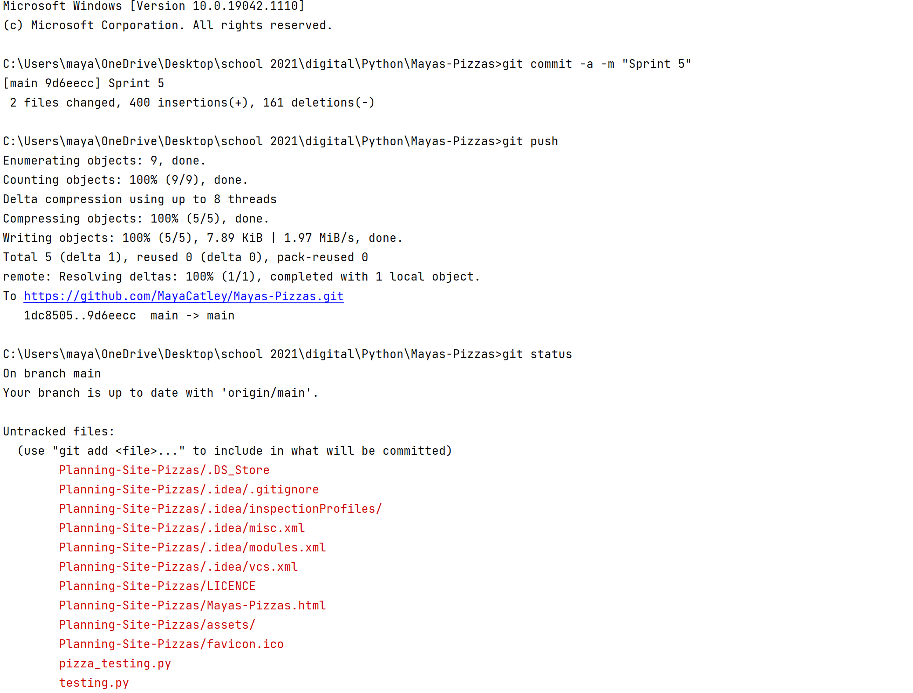Reflection
Sprint Five works great, and I am very happy with how my program turned out. It runs cleanly and the validation all works well, I was able to validate the phone numbers to be the right length and format, as well as making the name and address be a certain length. With all possible user inputs that could require validation, I have also included a helpful error message that would advise the user on how they could avoid the error in the future.
Another thing I had to figure out for this Sprint was phone number validation, I tried multiple different ways to achieve this. I first made it so the phone numbers had to be 8 digits, but I soon realised that this would decline lots of valid phone numbers, I then realised that the most accurate phone validation would be determining whether or not the number was valid based off the first 2-3 digits of the phone number, this was a lot better and meant that all phone numbers accepted were actually valid. I did this by changing the input for the phone number from get_integer to get_string. The reason for this was phone numbers might be input in a variety of ways:
I also saw another problem with my code, where the original phone number is printed on the receipt regardless of if the number is valid, This was happening because my program was only returning the phone number and not True/False, which meant that the first number the user entered was used, rather than their last/valid number.
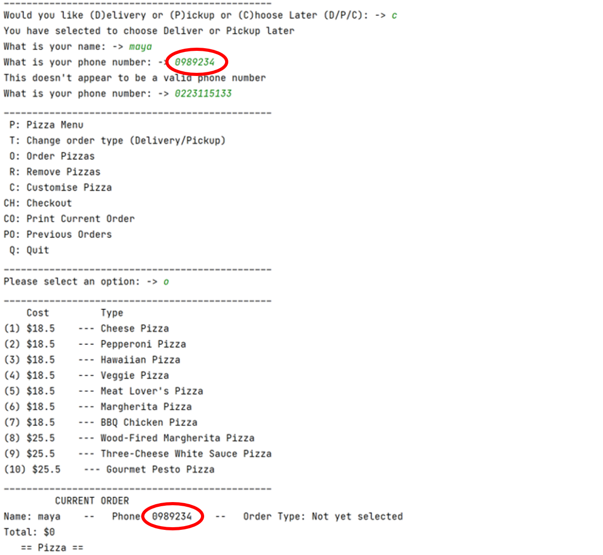I did lots of testing during this final Sprint to make sure that there were no errors, I did this by essentially testing as many possible inputs as I could think of every time the program requested user input. By doing this I was able to see if my validation was working. I was also able to remove all the strings/descriptions of information, such as the one mentioned in Sprint 4.
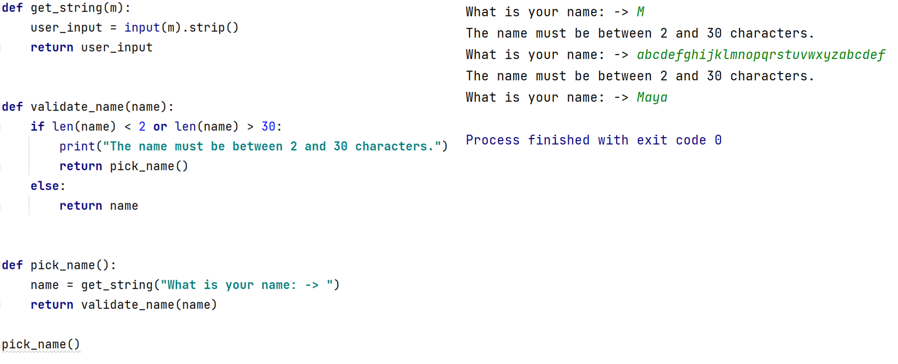
This is an example of how I went about coding the name validation to make sure that the users name was 2-30 characters.
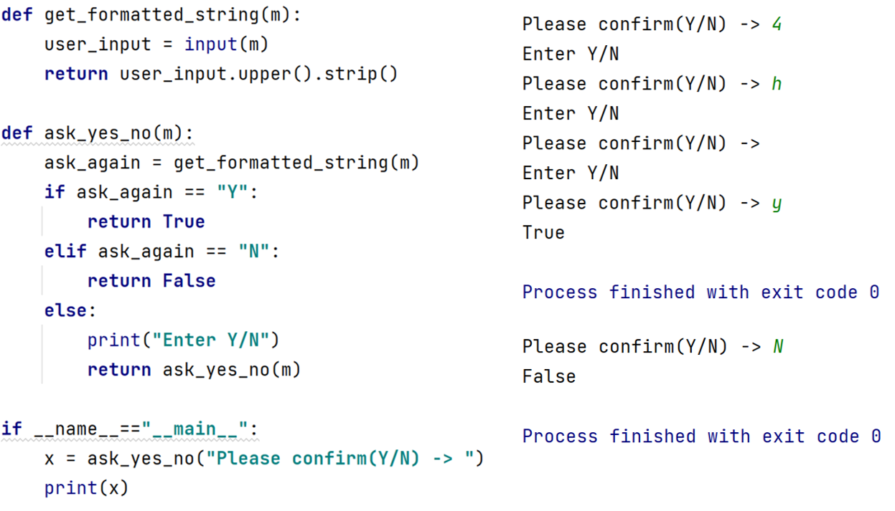
This is an example of how I went about coding the Yes and No validation to make sure that Yes was accepted, No was not, and anything else requested the user to try again.
As a whole I am super pleased with how my program functions, I was able to check off most of my Project Backlog (which can be seen bellow) including features I added without the intention of completing such as customisable pizzas. I also think my planning was very effective, as with a project as big as this one as it allowed for a clear overview of my project.
Here is a video of my Dad using my program, with me telling him the options and him picking.
Sorry the sound is super bad !! I used ScreenCast Matic and it couldn't record sound better.
What my Project Backlog looks like now
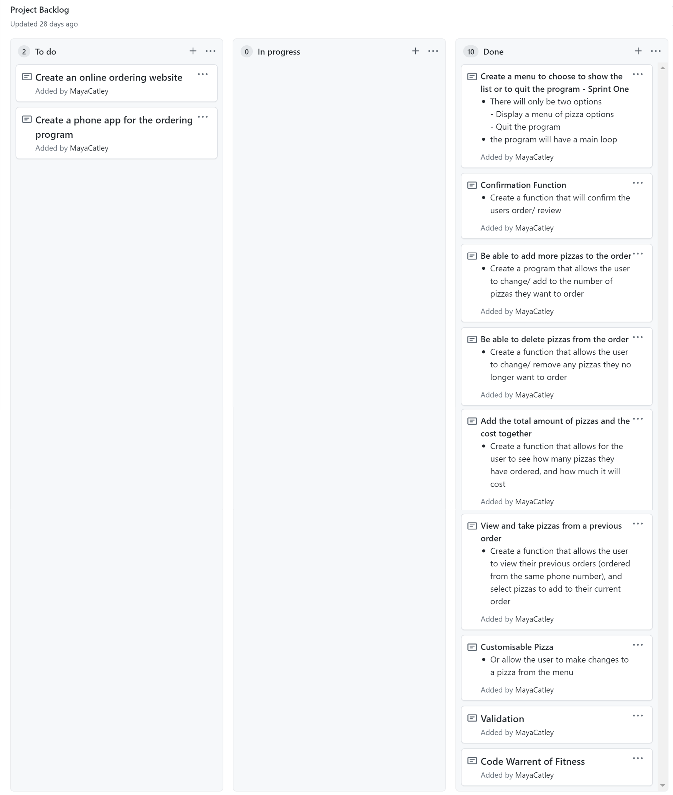Relevant Implications Summary
Future Proofing
Future Proofing was essential to ensure that my program would not only function properly now, but in the future too.
To do this, I made sure that my program was easy to update, I achieved this making sure it was easy to add new functionality and features, I addressed this by adding new menu items and new functions (as my program is a function based build) frequently to ensure no errors would arise. This is why it was so crucial to create the program by pushing each Sprint to Git to ensure that if a function happened to break a section of the program it was easy to go back to the previously working program.
I also had to ensure that my program would be easy for another developer to work on and improve, I achieved this by making sure that majority of my code was commented with helpful and descriptive sentences briefly explaining the purpose of functions and lines of code, I also included doc typing in my code to document specific segments of my code, doc typing consists of listing the classes, exceptions and functions, and a one-line summary. As well a starting my program with a main function, all of these allow for the code to be easy to understand and simple to see how the code works.
Functionality
Functionality was crucial when making sure that my program worked well, and that it had no bugs and wouldn't crash
To do this I had to ensure that my program worked properly (for example when adding costs), and that it didn't crash, this means that I had to regularly and systematically test my program after each Sprint. I achieved this by getting my friends to test out my program as I went, and then finally getting my Dad to test it (which is the video above). It was so important to test my code regularly and fix errors as they happened, as it would have been so much more difficult to try and fix multiple errors at the same time. Another way in which I dealt with errors, was putting my code through a Python Style Checker, majority of my errors we due to too long lines which was a easy fix, but it was great to know afterwards how few errors my code had. Another step I took to improve my program's functionality was to have separate component tests, this meant that I could trial sections of my code separately, so I could deal with any errors on a smaller scale, rather than trying to put the new code in straight away and all at once.
Here is an example of some testing I did in regards to phone numbers. This was to test what numbers would be accepted and what numbers wouldn't. It was super helpful to do this test first as I could find errors much easier than searching through all of my code to find errors.
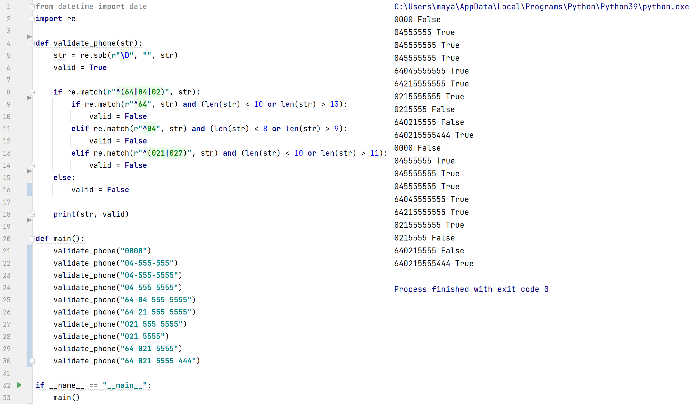Usability
Usability makes sure that the user always knew what was going on.
To do this I had to ensure my program was easy to use, I did this by making sure the user was always receiving informative user feedback (This was achieved by constantly printing out an updated receipt with the users order, cost total, and choice of delivery/pickup/choose later), I made sure to communicate with the user if they made an error (for example "This doesn't appear to be a valid phone number"), or coding it so my program was able to fix the error on its own; this was done by striping spaces, and converting uppercase and lowercase letters. I also made sure I used a consistent navigation system which can be seen on the main menu and in the receipt.
I also made sure my program was predictable, I did this by making sure the user could always return to the main menu if they wanted I addressed this by making "enter 0 to exit" always an option. I also made it so the user was always receiving feedback once they completed a task, for example "You have selected to choose Delivery or Pickup later", this allows the user to understand what is currently happening, and not make them guess.